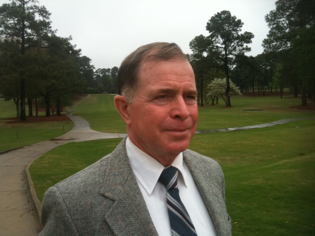
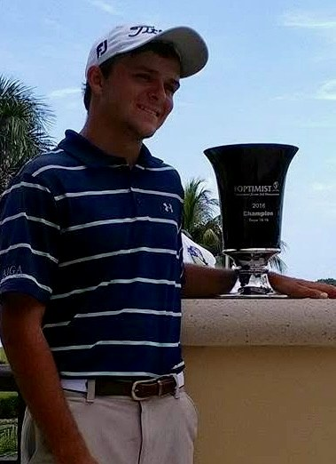
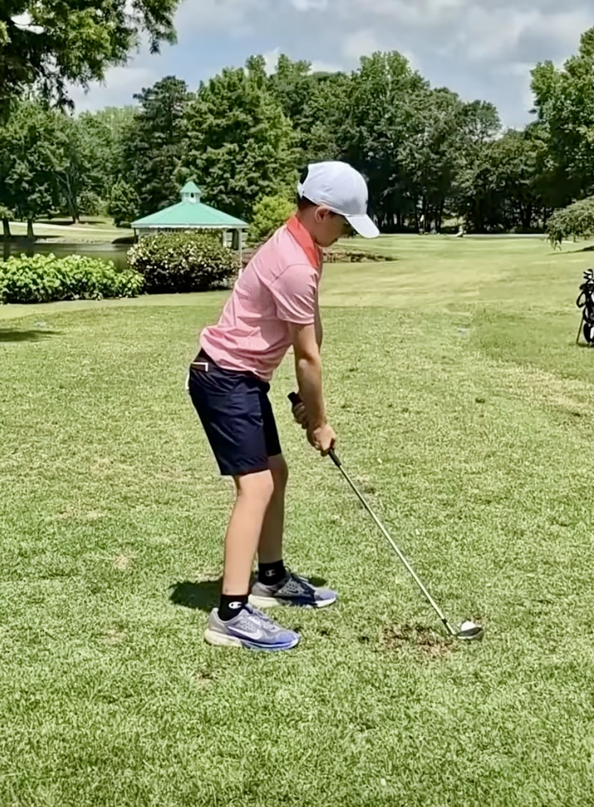
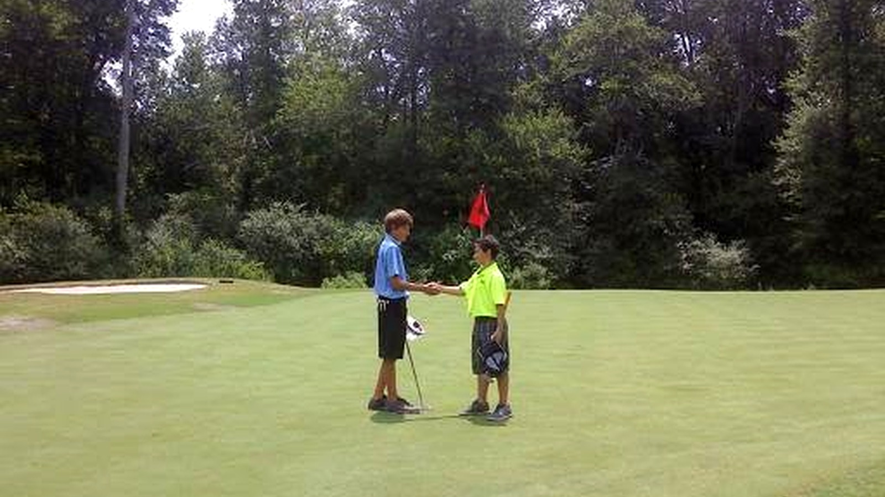

Private lessons, junior development, clinics and on-course coaching for every age and skill level.

Wendell’s instruction is grounded in a championship playing career and a practical understanding of how golfers learn. He was named Georgia PGA Teacher of the Year, ranked among Golf Range Magazine’s Top 50 Teachers in America, and has conducted more than 35 teaching clinics and professional seminars.
His approach begins with the individual: understand the player, simplify the motion and build confidence that transfers to the course.
Connor won the 2016 Optimist International Junior Golf Championship, earned ASUN Co-Freshman of the Year, became a two-time collegiate individual medalist, set Kennesaw State’s par-72 54-hole scoring record at 201 (-15), and produced a remarkable 9-under-par 27 over nine holes.
He brings competitive credibility, energy and a player-centered approach to juniors, adults and aspiring tournament golfers.

One-on-one coaching tailored to your swing, goals and playing experience.
Age-appropriate fundamentals, etiquette, confidence and tournament preparation.
Beginner programs, women’s clinics, family sessions and corporate instruction.
Strategy, club selection, scoring decisions and routines in real playing situations.

Junior programs introduce the fundamentals in a safe, encouraging environment while helping more experienced players develop competitive habits.
Practice plans, short-game testing and on-course feedback help players turn better mechanics into lower scores.
